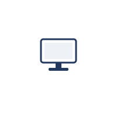
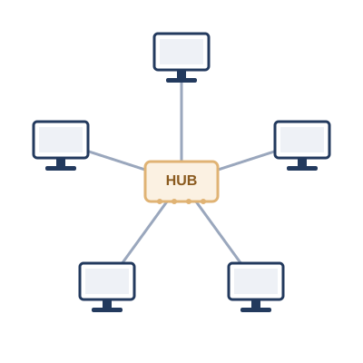
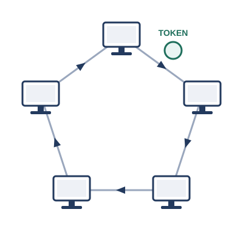

これから語るのは、コンピュータがまだ1台ずつ孤立して動いていた時代から、今のように世界中がひとつながりになるまでの物語です。実際の規格や年表をそのままなぞったものではなく、事実とはかなり異なっている部分もあります。技術が生まれた順番やきっかけも、分かりやすさを優先して大胆に組み立て直しています。あくまで、全体像をつかむためのイメージとして読んでください。
はじまりは、1台のコンピュータでした。計算をし、データを保存し、結果を表示する。それだけなら、他の機械とつながる必要はありません。

しかし、隣の部屋にもう1台コンピュータが置かれたとき、事情が変わります。片方で作ったデータを、もう片方でも使いたい。わざわざフロッピーディスクを持って歩くのは、あまりに面倒です。
そこで生まれたのが、「つなぐ」という発想でした。2台の機械をケーブルで結び、電気信号でデータをやり取りする。ネットワークの、いちばん最初の一歩です。
ただし、つないだだけでは終わりません。3台、4台とコンピュータが増えてくると、「今送った信号は、いったいどの機械宛てなのか」を区別する必要が出てきます。ここで、それぞれの機械に固有の名前――アドレス――を割り振るという発想が生まれました。
やがて、1つの部屋に何台ものコンピュータが並ぶようになります。1台1台をケーブルで結んでいては、配線が現実的な方法とはいえません。そこで登場したのが、すべての機械を1台の集線装置につなぎ、そこを経由してやり取りする方式でした。今でいう「ダムハブ」、リピーターハブです。
ただし、ダムハブは受け取った信号を、つながっている全員にそのまま送り出すだけの単純な機械です。全員が同じ1つの土俵に上がっている状態、と言ってもいいでしょう。誰かが話している最中に別の誰かも話しはじめれば、信号同士がぶつかり合ってしまいます。

そこで必要になったのが、「順番を守る」ための取り決めです。最初期によく使われたのが、コンピュータを一列の輪につなぎ、話してよい権利――トークン――を一方向にぐるぐると回していくトークンリングという方式でした。

もう一つの方式が、CSMA/CDでした。あらかじめ回線が空いているかどうかを確認してから話し始め、それでも同時に話し出してぶつかってしまったら、いったん話すのをやめてお互いランダムな時間だけ待ってから話し直す――そんな譲り合いのルールで衝突に対処します。
台数がさらに増えると、CSMA/CDの「譲り合い」だけでは追いつかなくなります。ぶつかり合い（コリジョン）があまりに頻繁に起こり、ネットワーク全体の効率が落ちてしまうのです。
この問題に答えを出したのが、L2スイッチでした。それまではダムハブにつながる全員が、衝突の起こりうる範囲――衝突ドメイン――をまるごと共有していました。スイッチは、ポートごとに衝突ドメインを分け、他のポートの通信とはぶつからないようにします。この「衝突ドメインを小さくする」工夫を突き詰めていった結果、最終的には1つのポートに1台だけがつながる形になり、さらに送信と受信を同時にこなせる全二重という仕組みと組み合わさることで、そもそも衝突が起こる余地そのものがほとんどなくなっていきました。
コンピュータ同士がつながると、面白いことが起こります。あるコンピュータは、みんなが使いたいデータやサービスを一手に引き受けるようになっていきました。ファイルを保管する係、印刷を取りまとめる係。周りのコンピュータは、その係にお願いをする側にまわります。これが、サーバーとクライアントという役割分担のはじまりです。
サーバーは、用意するのも管理するのも手間のかかる、貴重な存在です。だから1台のサーバーに、できるだけ多くの仕事をさせたい。ファイルの受け渡しも、メールのやり取りも、Webページの配信も、全部同じ1台で済ませられれば効率的です。
けれど、1台のサーバーに複数のサービスを同居させると、新しい問題が持ち上がります。届いた通信が、いったいどのサービス宛てなのかを、区別できなければならないのです。ここで生まれたのが、窓口の番号――ポート番号という考え方でした。
こうして社内・学内といった限られた範囲でのネットワークができあがると、今度は「よそのネットワークともつながりたい」という欲求が生まれます。異なる組織のネットワーク同士を結ぶには、アドレスの体系をもっと大きな規模に広げる必要がありました。ここで登場するのが、IPアドレスと、ネットワーク同士の橋渡し役であるルータです。
ネットワークがネットワークとつながり、そのまたネットワークとつながっていく。この積み重ねの果てに生まれたのが、今わたしたちが当たり前のように使っているインターネットです。
ただし、扉を開けば、招かれざる客も入ってきます。つながる相手が増えるほど、「入れたくない相手を締め出す」という発想が必要になりました。アクセス制御の考え方は、こうして生まれています。
外の世界とのつながりが広がっていく一方で、組織の中でも別の悩みが膨らんでいきました。人が増え、机が増え、機材が増え、フロアが足りなくなる。部署ごとにネットワークを分けたくても、そのたびに専用のスイッチを1台ずつ用意していては、配線もコストもかさむ一方です。「1台の機械の中に、まるで複数の独立したネットワークがあるかのように見せかけられないか」――そんな発想から、次の技術が生まれることになります。